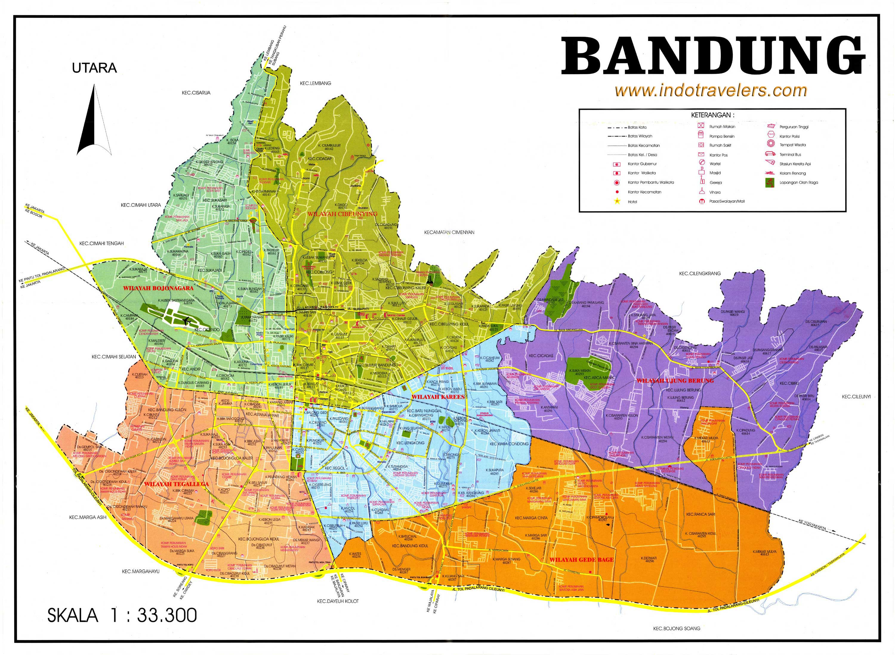
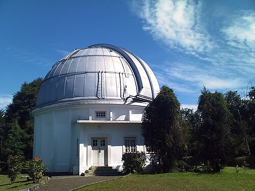

Sejarah

kota bandung berasal dari kata bandung atau bendungan karena terbendungnya sungai
citarum oleh lava gunung tangkuban parahu yang lalu membentuk telaga, legenda yang
diceritakan oleh orang-orang tua dibandung mengtakan bahwanama bandung diambil dari
sebuah kendaraan air yang terdiri dari dua perahu yang diikat berdampingan yang disebut
perahu bandung yang digunkan Bupati Bandung, R.A. Wiranatakusumah II, untuk
melayani ci tarum dalam mencari tempat kedudukan kabupaten yamng baru untuk menggantikan
ibu kota yang lama di Dayeuhkolot.
Berdasarkan filosofi sunda, kata bandung juga berasal dari kalimat nga-bandung-an nga-bandung-an
indung, yang merupakan kalimat sakral dan luhur karena mengandung nilai ajaran sunda,
nga-bandung-an artinya menyaksikan atau bersaksi. banda adalah segala sesuatu yang berada di alam hidup
yaitu di bumi atmoster, baikmahluk hidup maupun benda mati.
sinonim dari benda adalah harta. indung berarti ibu atau bumi, disebut juga sebagai ibu
pertiwi tempat benda berada.
Geografis

kota bandung dikelilingi oleh pegunungan, sehingga bentuk morfologi wilayahnya bagaikan
sebuah mangkok raksasa,[9] secara geografis kota ini terletak di tengah' provinsi
jawa barat, serta berada pada ketinggian 768 m dia atas permukaanlaut, dengan titik
tertinggi berada disebelah utara dengan tinggian 1.050 meter di atas permukaan
laut dan sebelah selatan permukaan kawasan rendah dengan ketinggian 675 m di atas
permukaan laut.
kota bandung diarili dua sungai utama, yaitu sungai cikapundung dan citarum
beserta anak' sungai yang umumnya mengalirke arah selatan dan beertemu
sungai citarum. dengan kondisi demikian, bandung selatan sangat rentan terhadap
masalah banjir terutama pada musim hujan.
Wisata

sejak dibukanya jalan tol cipularang, kota bandung telah menjaditujuan utama dalam
menikmati liburan akhirpekan terutama dari masyarakat yang berasal dari jakarta
sekitarnya. selain menjadi kota wisata belanja, kota bandung juga dikenal dengan
sejumlah besar bangunan lama berarsitekxtur peninggalan belanda.
Fram house lembang

Berada dijalur utama Bandung-Lembang, Farm House menjadi objek wisata
yang tidak pernah sepi pengunjung. Selain karena letaknya strategis,
kawasan ini juga menghadirkan nuansa wisata khas Eropa.
Semua itu diterapkan dalam bentuk spot swafoto Instagramable.
Observatorium Bosscha

Memiliki beberapa teleskop, antara lain,Refraktor Ganda Zeiss, Schmidt Bimasakti
'Refraktor Bamberg, Cassegrain GOTO dan teleskop surya. Benda ini diletakkan pada
atap kubah sehingga saat teropong digunakan, atap tersebut harus dibuka. Observatorium
Bosscha boleh dikunjungi oleh siapapun, tanpa tiket.namun,bagi yang inginmenggunakan
teleskop Zeiss, wajib mendaftarkan diri.untuk instansi atau lembaga pendidikan,
diberikan jadwal hari Selasa sampai Jumat. Sementara itu, kunjungan individu dibuka setiap hari
Sabtu.